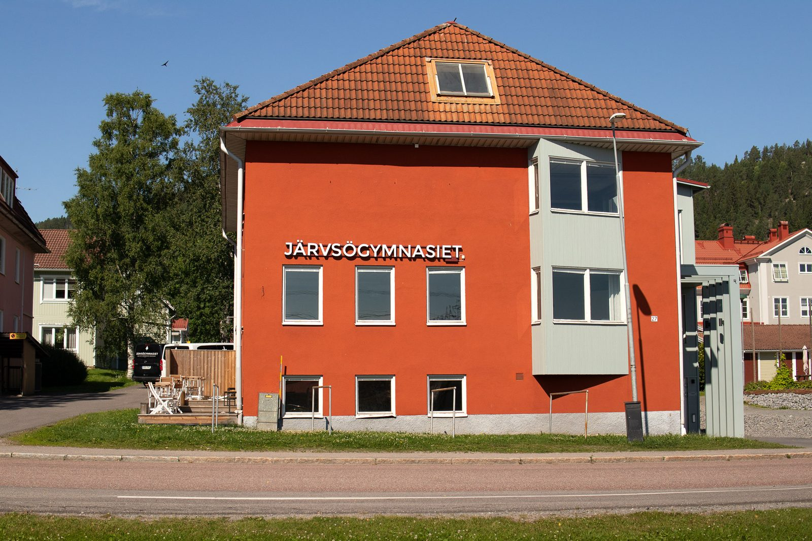
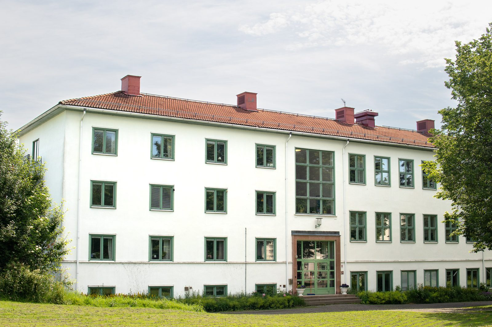
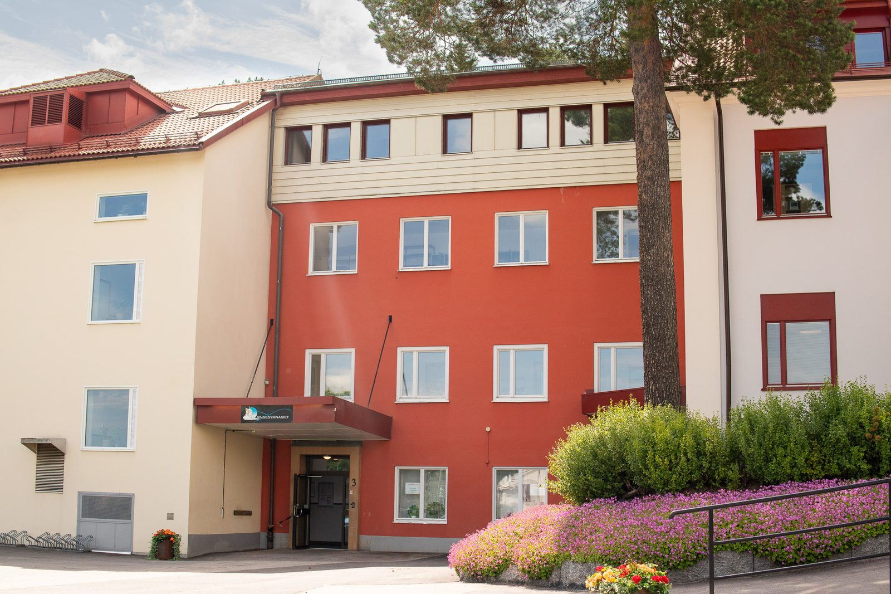
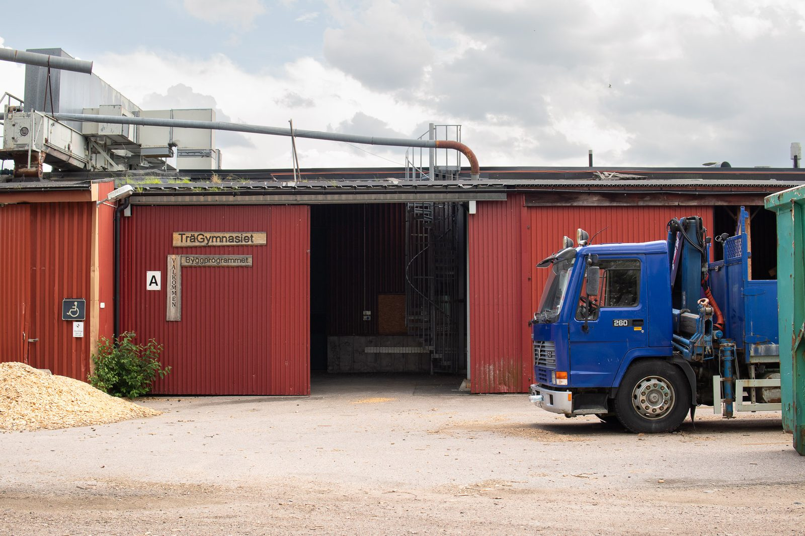
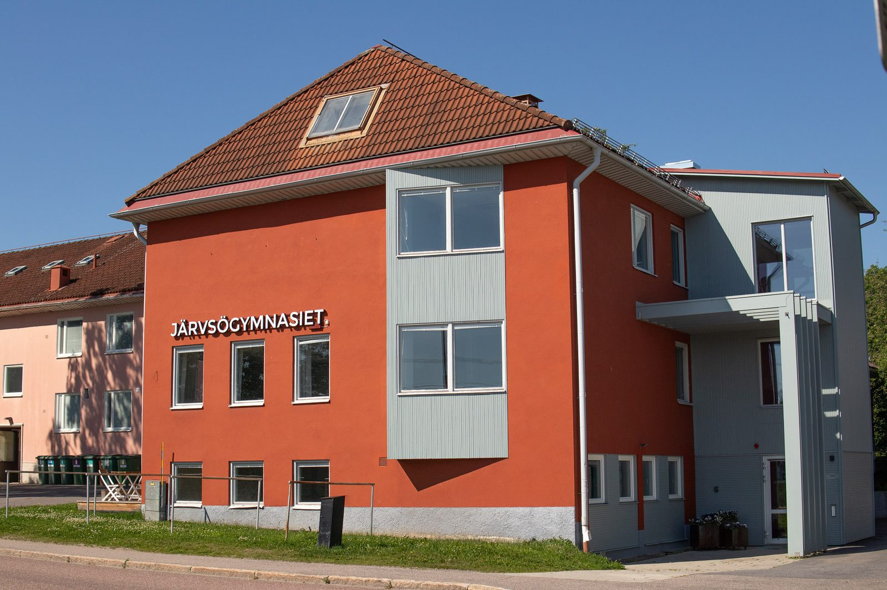

Kommersiellt

work/commercial/commercial-005

work/commercial/commercial-002

work/commercial/commercial-003

work/commercial/commercial-004

work/commercial/commercial-006

work/commercial/commercial-007

work/commercial/commercial-001